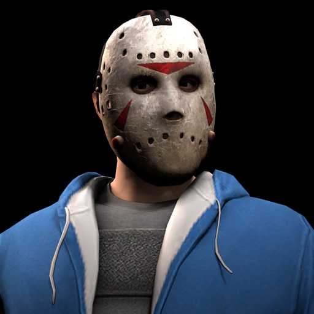

-
Jason Voorhees
Jason Voorhees foi um menino com deficiência mental. Desde sexta feira 13, ele é descrito como um assassino em massa não-verbal, indestrutível, empunhando um facão. Uma de suas principais características é ser completamente silencioso.
ATQ/ 3313 DEF/ 2000 -
Pinhead
O Cenobita conhecido como Pinhead já foi um humano conhecido como Elliot Spencer que nasceu em 1887 na Grã-Bretanha da Era Vitoriana. Quando jovem adulto, ele se juntou ao Exército Britânico e mais tarde serviu na França durante a Primeira Guerra Mundial, Necromancia: Pinhead tem o poder de transformar os mortos (humanos e animais) em novos Cenobitas. Telepatia: Não se sabe muito sobre a extensão desse poder, mas o que se sabe é que Pinhead é capaz de ler o medo e os pecados de outros seres, o que lhe permite dizer se alguém é culpado ou inocente.
ATQ/ 3000 DEF/ 2600 -
Jeff O Assassino

Ele é um adolescente que sofre um incidente horrível em que um de seus valentões incendeia seu rosto. Como resultado, seu rosto fica deformado, mas em vez de ficar perturbado, ele desenvolve uma estranha afeição por seu novo rosto. Essa afeição peculiar por seu rosto deformado gradualmente o leva à loucura, levando-o por um caminho sombrio como um assassino em série, realizando seus desejos homicidas insaciáveis.
ATQ/ 3000 DEF/ 1200 -
H2o Delirious
ele se parece muito com o jason, pela mascara de hockey, exceto pelos detalhes vermelhos, não se sabe muito sobre ele, exceto que ele é um assassino do gelo que usa um moleton azul, e que atacava numa pista de patinação de gelo, também os poderes são desconhecidos.
ATQ/ 3300 DEF/ 1800 -
Pânico
Pânico, e um assassino em serie, que possui super velocidade, e voz distorcida, na hora de matar suas vitimas, frio e caulculista, mesmo sendo morto seu legado e passado.
ATQ/ 2000 DEF/ 1200 -
Michael Myers
Myers é retratado como uma criança de seis anos que na noite de Halloween, assassina a sua irmã mais velha, Judith. Depois de ficar institucionalizado num hospital psiquiátrico durante quinze anos, escapa e regressa a casa em Haddonfield, Illinois, para matar mais adolescentes.
ATQ/ 3120 DEF/ 2000 -
Freddy Krueger
Freddy é um assassino de crianças da Springwood, Ohio, que após ser queimado por pais vingativos passa a atacar adolescentes em seus sonhos, matando-as no mundo real por tabela.
ATQ/ 2800 DEF/ 2500